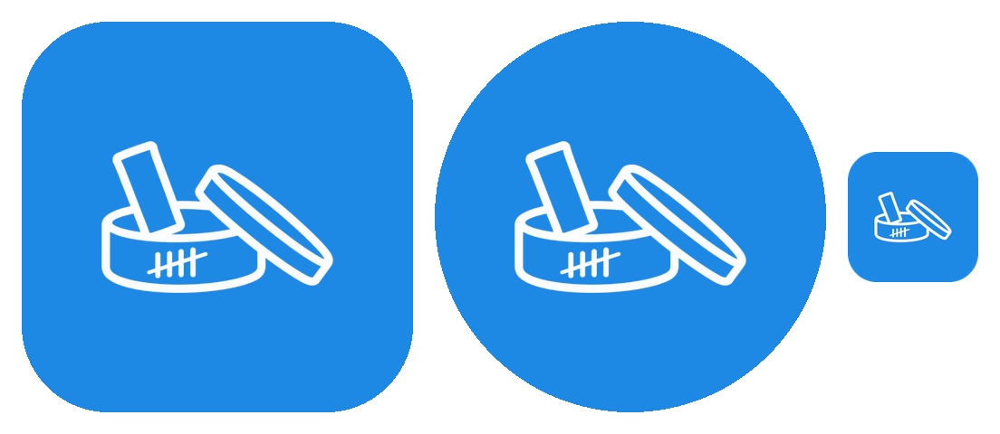
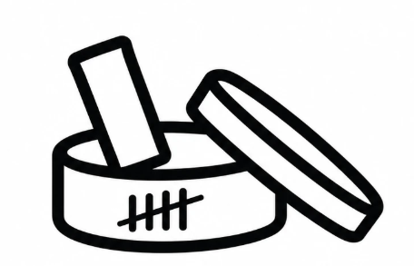

Исходник — ваш PNG без изменений в рисунке: белый фон убран, штрихи сделаны белыми, рисунок вписан в безопасную зону adaptive icon (66 из 108 dp). Слева направо: квадратная маска, круглая маска, размер 48 dp.

